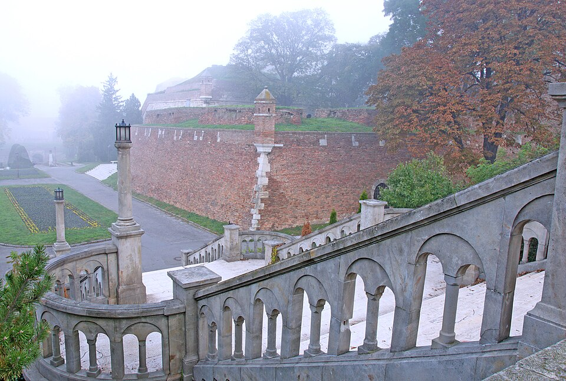
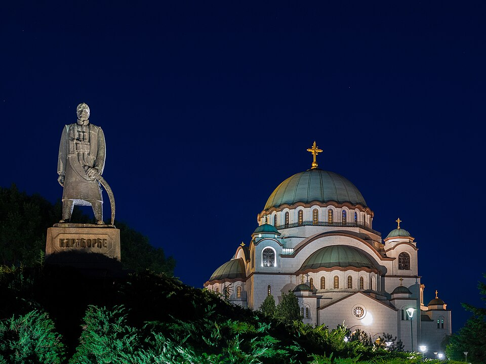
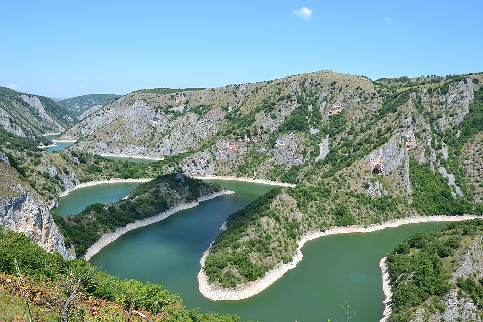
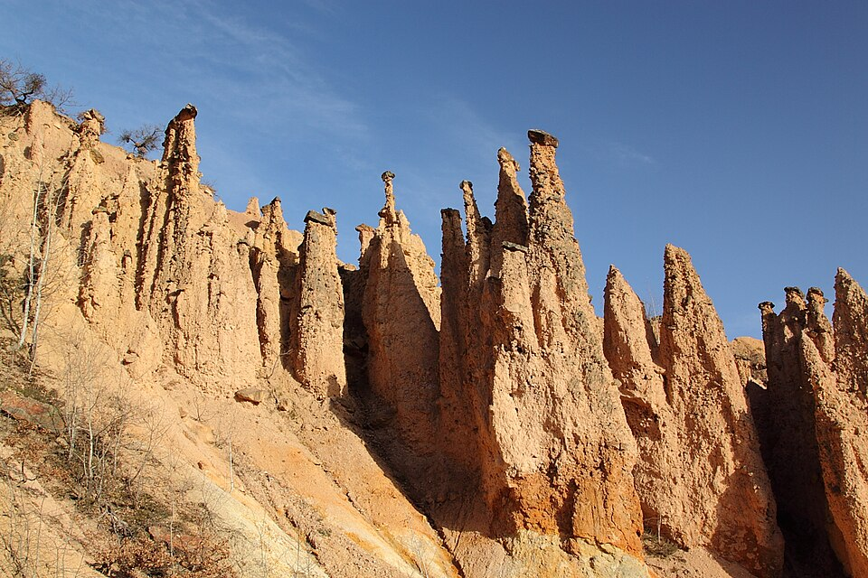

Serbia세르비아 Србија / Srbija
도나우·사바강의 교통축과 다양한 문화권이 만나는 나라
- Capital
- 베오그라드 (Београд)
- Language
- 세르비아어
- Currency
- 세르비아 디나르 (RSD)

베오그라드 칼레메그단 요새Belgrade Fortress, Kalemegdan
성 사바 성당Church of Saint Sava, Belgrade
우바츠 협곡의 굽이치는 강Uvac River meanders
악마의 도시 돌기둥Đavolja Varoš (Devil's Town)Explore Serbia
세르비아 더 알아보기
도나우·사바강의 내륙 교통축과 보이보디나 평야, 서부 산악 및 남부의 다양한 문화권이 만나는 나라. 중세 정교회 수도원에서 현대 ICT·자동차 산업까지 폭넓은 층위를 볼 수 있다.

Latest updates
세르비아 최근 뉴스
-
세르비아: 미국·러시아가 학생 단체에 접근, 베오그라드 안보회의 16~18일 개최
BTA 헤드라인에 따르면 미국과 러시아가 각각 학생 단체 면담을 통해 세르비아와의 관계 강화를 추진하고 있습니다.
원문 BTA – 헤드라인 목록(11월 13일) 외 2건
-
세르비아 전 경제장관 직권남용 혐의 체포…크로아티아 폐기물 스캔들 정치 쟁점화
발칸인사이트에 따르면 세르비아 전 경제장관 라데 바스타가 베오그라드 전력회사 재직 중 스포츠 단체에 부당한 기부금을 승인한 혐의로 체포됐습니다.
-
크로아티아 유해 폐기물 스캔들이 집권 HDZ 위협…세르비아에서는 시위대 사건 수사 부실 의혹
발칸인사이트 분석에 따르면 크로아티아에서 불법 투기된 유해 폐기물 문제가 10년째 집권 중인 HDZ에 큰 타격이 될 수 있습니다. 문제는 지역 주민의 분노에서 전국 이슈를 거쳐 EU 차원까지 번졌습니다(전문은 유료라 공개 부분만 확인).